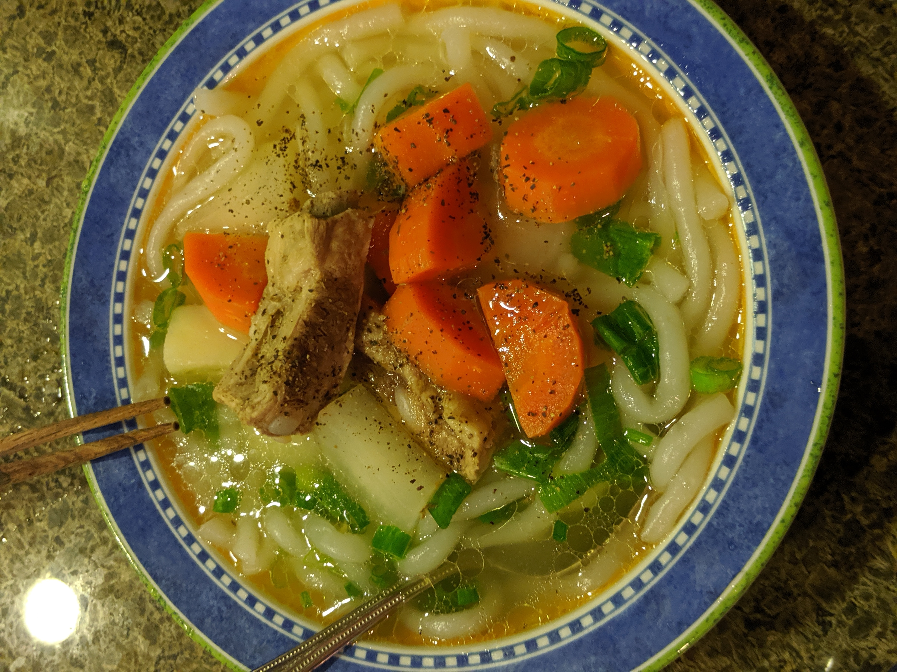

I love soup. I often made different types of soup, such as hot pot, porridge, vegetable soups.
Before I became vegetarian in 2024, one of my favorite soup was the home made Udon Pork Broth Soup. It is a staple in the asian culture.
The process for making this soup is simple because it requires few ingredients, some stirring, and 1.5 - 2 hour combined prep work and cook.
It is a delicious and nutritious dish where the rich flavor comes directly from stewing the bones.
Let's get started!


(I could not find the picture for the finished dish so I used one from another time I cooked.)
 (I garnished the soup with green onions and pepper.)